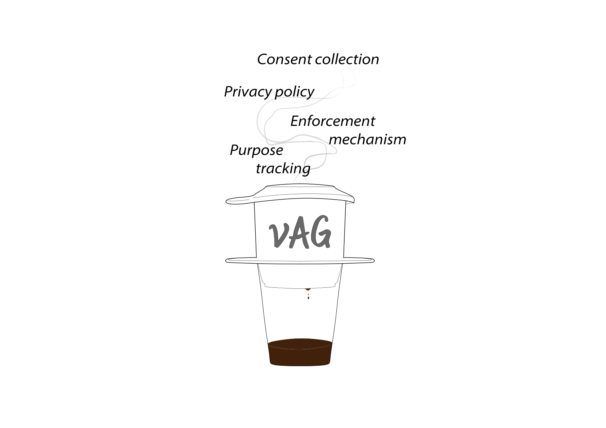
“Personal data shall be collected for specified, explicit and legitimate purposes and not further processed in a manner that is incompatible with those purposes.”
“Processing shall be lawful only if the data subject has given consent to the processing of his or her personal data for one or more specific purposes.”
@app.route("/view_event/<id>")
def view_event(id):
event = Event.query.get(id)
ad = get_custom_ad()
return render_template("view_event.html", event=event, ad=ad)
<h2>{{ event.title }}</h2>
<p>{{ event.description }}</p>
<h4>Attendants</h4>
{% for u in event.attendants %}
{{ u.name }}
{% endfor %}
<div class="ad">
Hi {{ current_user.name }}, {{ ad.content }}
</div>
@app.route("/view_event/<id>")
def view_event(id):
event = Event.query.get(id)
ad = get_custom_ad()
return render_template("view_event.html", event=event, ad=ad)
<h2>{{ event.title }}</h2>
<p>{{ event.description }}</p>
<h4>Attendants</h4>
{% for u in event.attendants %}
{{ u.name }}
{% endfor %}
<div class="ad">
Hi {{ current_user.name }}, {{ ad.content }}
</div>
@app.route("/view_event/<id>")
def view_event(id):
event = Event.query.get(id)
ad = get_custom_ad()
return render_template("view_event.html", event=event, ad=ad)
{% set user = current_user %}
{% set data = "name" %}
{% set purpose = "FUNCTIONAL" %}
{% set username = user.name if has_consent(user, data, purpose) else "" %}
<h2>{{ event.title }}</h2>
<h4>Attendants</h4>
{% for u in event.attendants %}
{{ u.name if has_consent(u, data, purpose) else "(hidden)" }}
{% endfor %}
<div class="ad">
Hi {{ username }}, {{ ad.content }}
</div>
| user | data | purpose | consent |
|---|---|---|---|
| Dhruv | name | FUNCTIONAL | 1 |
| Daniel | name | FUNCTIONAL | 1 |
| Hoang | name | FUNCTIONAL | 0 |
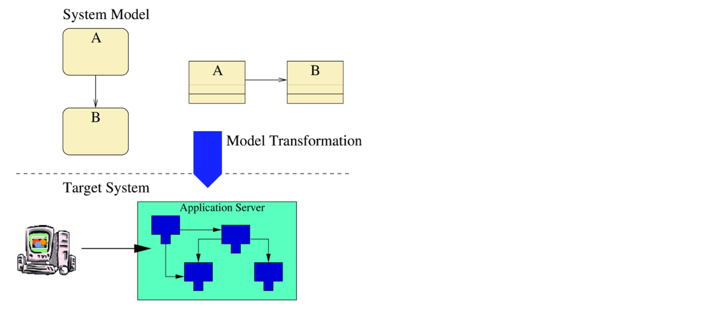
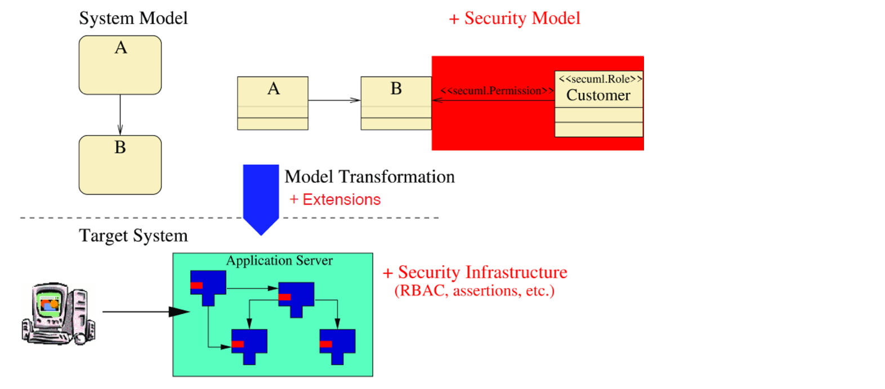
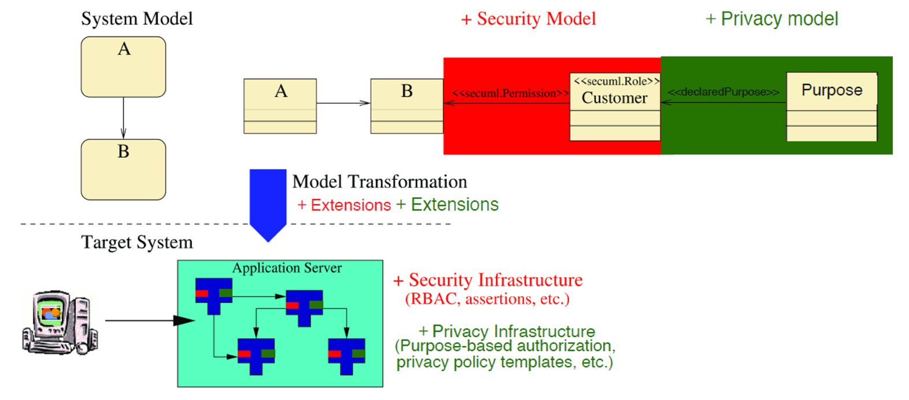
D. Basin, J. Doser, T. Lodderstedt. Model Driven Security: From UML Models to Access Control Infrastructures. ACM TOSEM, 2006. D. Basin, M. Clavel, M. Egea, M. A. G. de Dios, and C. Dania. A model-driven methodology for developing secure data-management applications. IEEE TSE, 2014.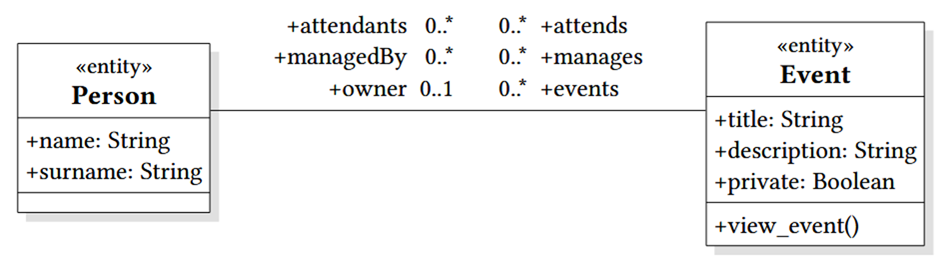
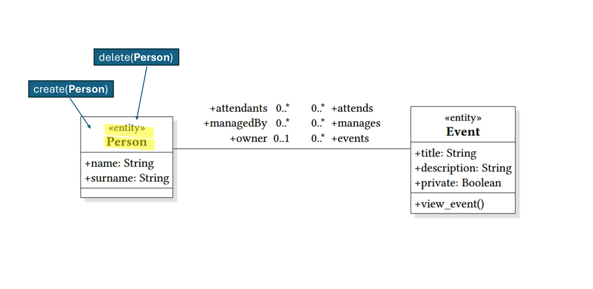
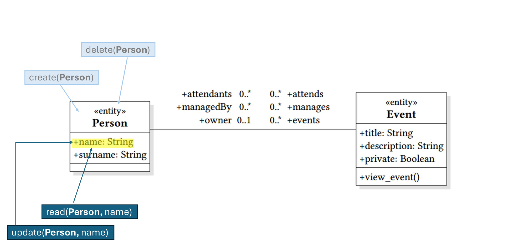
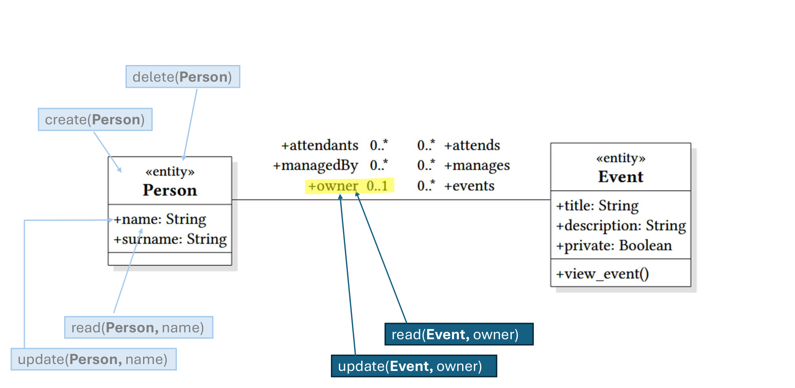
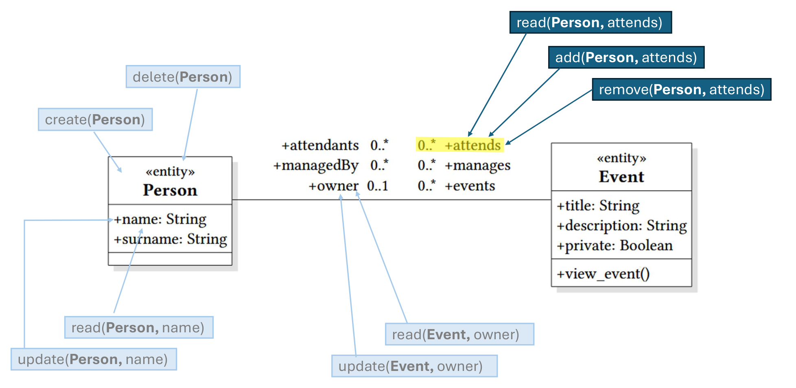
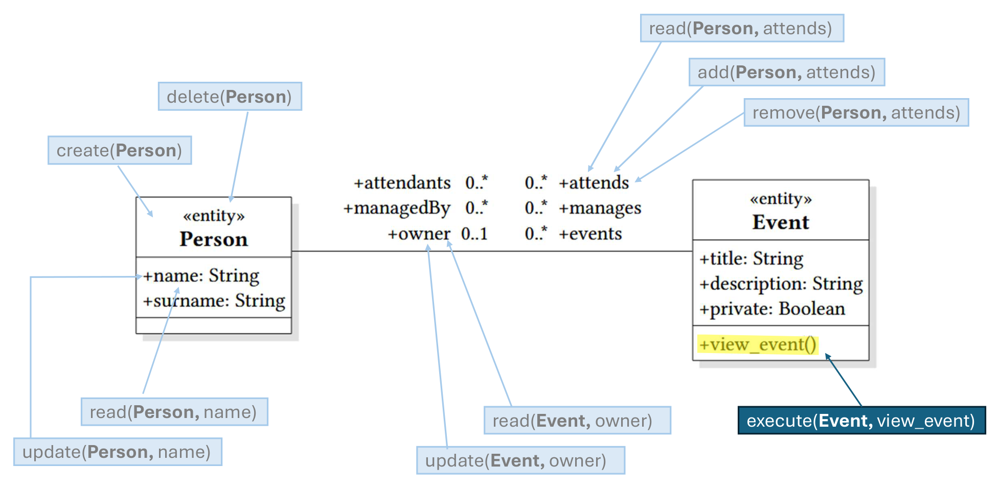
entity Person { String name String surname Set(Event) events oppositeTo owner Set(Event) manages oppositeTo managedBy Set(Event) attends oppositeTo attendants } entity Event { String title String description Boolean private Person owner oppositeTo events Set(Person) attendants oppositeTo attends Set(Person) managedBy oppositeTo manages view_event() }
Personal data { Person.name Person.events Person.attends } Purposes { FUNCTIONAL ANALYTICS ANY includes FUNCTIONAL ANALYTICS } Declared purposes { Person.name FUNCTIONAL [self.role = Role::FREEUSER] <you are a user with the FREEUSER role> } Actual purposes { Event.view_event FUNCTIONAL }
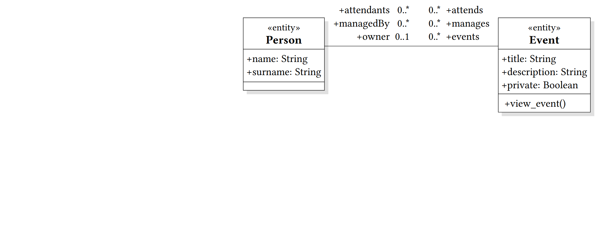
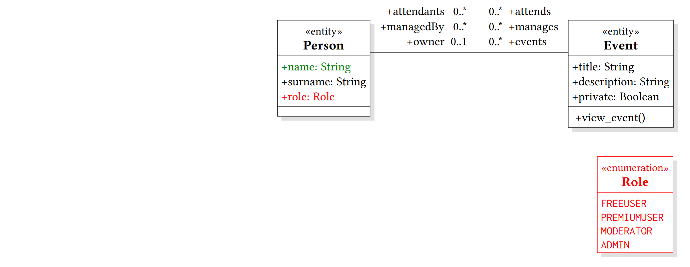
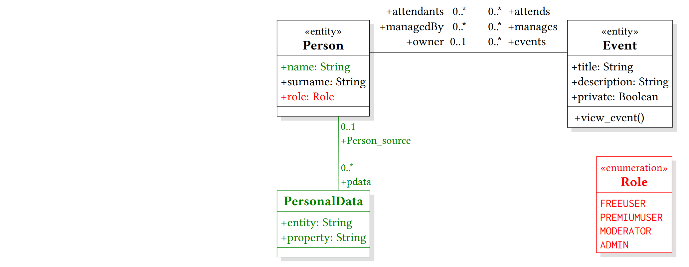
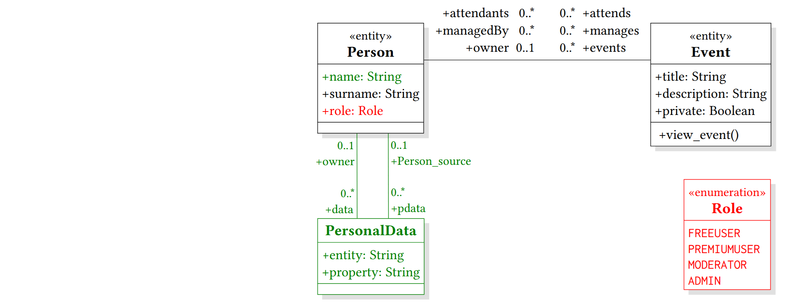
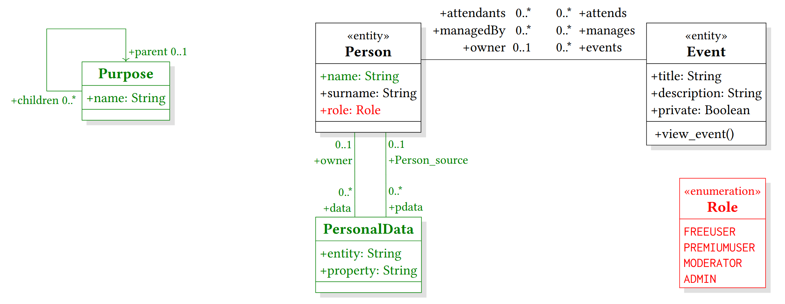
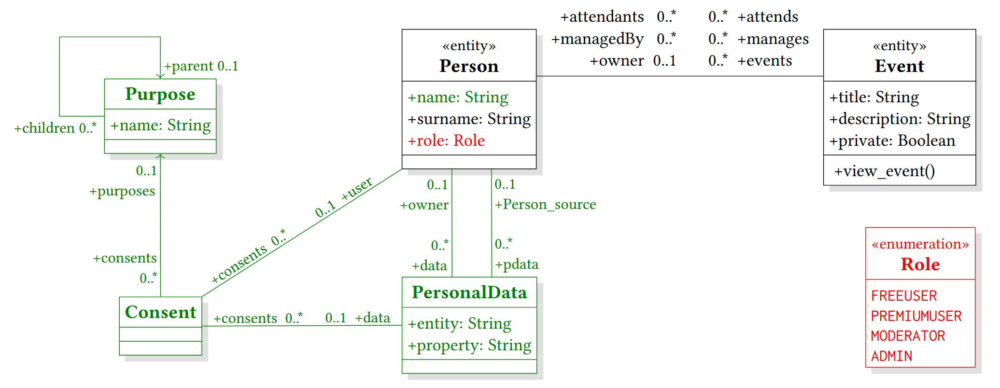
| Developers define | Code generation |
|---|---|
| Data model | Data classes & method stubs, annotated with actual purposes |
| Privacy model | Purpose limitation & consent checking enforcement Privacy notice & consent collection |
@secure(AP(['FUNCTIONAL']))
def view_event(request):
# TODO: Implement the method stub
return "# TODO: Implement the method stub"
@secure(AP(['FUNCTIONAL']))
def view_event(request):
event = Event.query.get(request.args.get('id'))
ad = get_custom_ad()
return render_template("view_event.html", event=event, ad=ad)
<h2>{{ event.title }}</h2>
<p>{{ event.description }}</p>
<h4>Attendants</h4>
{% for u in event.attendants %}
{{ u.name }}
{% endfor %}
<div class="ad">
Hi {{ current_user.name }}, {{ ad.content }}
</div>
| user | data | purpose | consent |
|---|---|---|---|
| Hoang | name | FUNCTIONAL | 10 |
A realization of our model-driven privacy methodology.
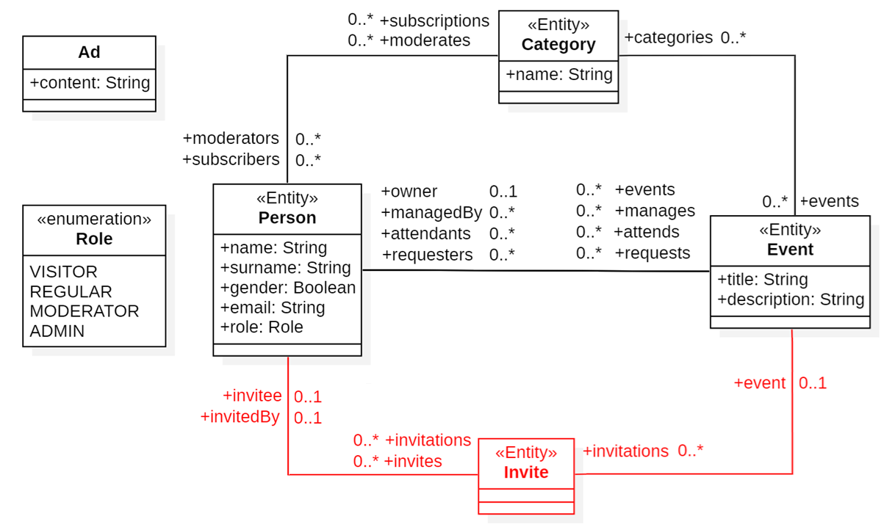
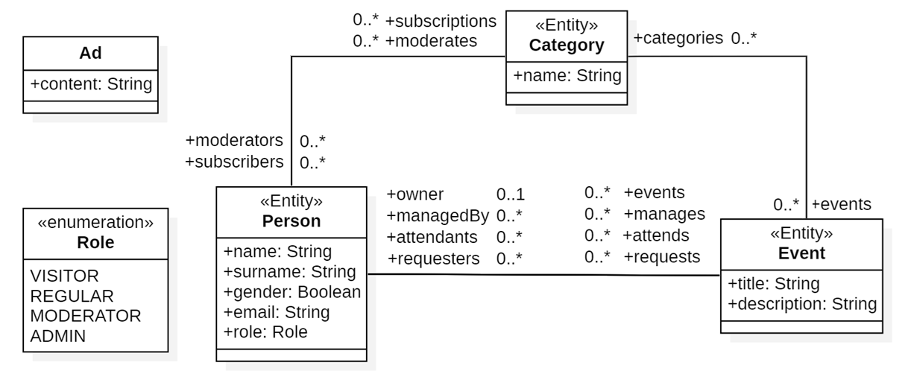
The application also serves customized ads and creates mass marketing emails.
| Phase | 2024 | 2025 | Total |
|---|---|---|---|
| Enrolled | 81 A 40 / B 41 | 113 A 56 / B 57 | 194 A 96 / B 98 |
| Development I | 60 A 34 / B 26 | 80 A 42 / B 38 | 140 A 76 / B 64 |
| Development II | 57 A 32 / B 25 | 73 A 37 / B 36 | 130 A 69 / B 61 |
| Evolution | 57 | 71 | 128 |
| Survey | 23 | 14 | 37 |
Each test checks whether a user may perform an action on a piece of personal data at a specific endpoint. Three modes of the owner’s consent:
Average percentage of failed tests: total number of failed tests ÷ total number of tests
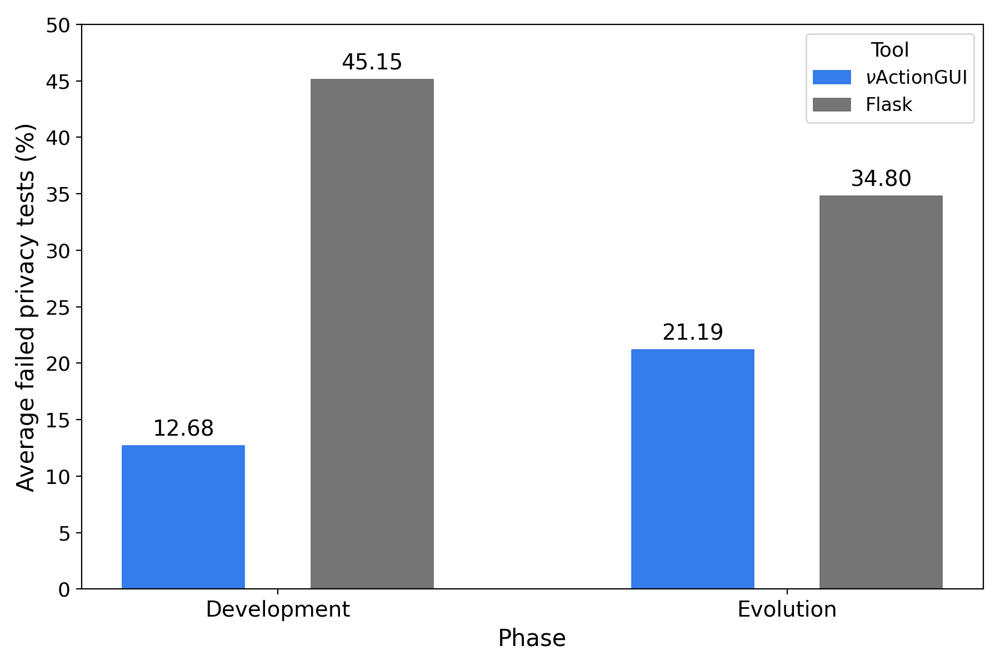
Development: νActionGUI produces ~ 3.5× fewer failed privacy tests than Flask.
Evolution: νActionGUI number is also lower.
Development effort: lines of code changed ÷ number of passing tests
Time effort: self-reported hours
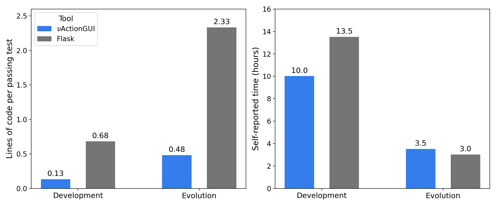
νActionGUI needs about 5× fewer lines of code per passing test, in all phases.
It also takes less time, but the difference is not significant.
We propose a model-driven methodology for data protection requirements, i.e., purpose limitation and user consent, in software systems.
Model-driven Privacy / Hoàng Nguyễn / ETH Zürich